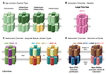
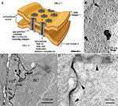
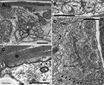
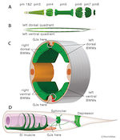
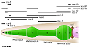
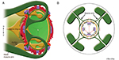
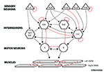
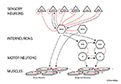
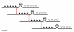
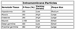

Handbook - Hermaphrodite
Subcellular and Pericellular Structures Gap Junctions see also Pericellular Structures
3 Development
Figures  GapjunctFIG 1 - Models of gap junction channels  GapjunctFIG 2 - Gap junction channels are clustered in the plasma membrane  GapjunctFIG 3 - Gap junctions seen in thin sections by TEM  GapjunctFIG 4 - Gap junctions link muscle cells into functional units  GapjunctFIG 5 - Innexin expression pattern in pharynx  GapjunctFIG 6 - Muscle arms of the head muscles are linked by gap junctions  GapjunctFIG 7 - Gap junctions function within and between layers to influence motor output  GapjunctFIG 8 - "Hub and spoke" gap junction system  GapjunctFIG 9 - Gap junctions connect a linear array of homologous VA motor neurons  GapjunctTABLE 1 - Gap junction features viewed by freeze fracture